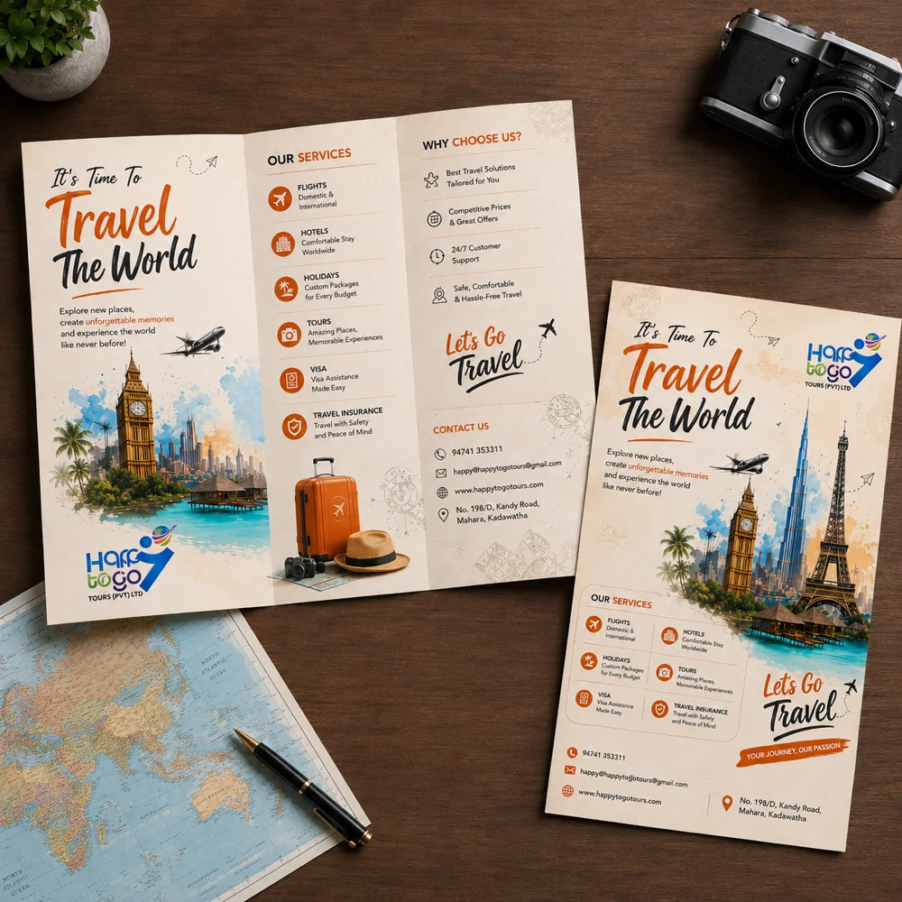

Design services / Bifold & Trifold Brochure Design in Madurai
Bifold & Trifold Brochure Design in Madurai
Sai Graphic Designs provides brochure design from Madurai for businesses presenting their services, products or company profile. Choose a bifold, trifold or multipage layout based on the amount of content and how readers will use it.

Choose the format before arranging content
A bifold normally gives four panels; a trifold gives six. A multipage brochure or booklet allows longer product or company information. Confirm panel or page counts, finished size and fold direction before quoting. Your printer template determines exact panel widths and production requirements.
Turn your content into a clear reading order
Supply approved headings, body copy, product details, images and contact information. We organise them into a cover, supporting sections and a clear next step. Strong images and concise text help the layout; copywriting, translation and additional photography need a separate scope.
Check the proof before print
Review page order, fold sequence, image quality and all names, prices and contact details. Share bleed, colour and export specifications from the printer. Confirm source files, revisions and turnaround in your quote. Extra pages or a changed brief may change the scope.
Frequently asked questions
What do you need to start a brochure?
Send final text, logo, approved images, brand colours, finished dimensions, fold style and panel or page count. Include the printer template and export specifications when available.
Will I receive a print-ready PDF and editable file?
Agree the required exports and source format before starting. A PDF is prepared to the agreed printer specifications; editable CDR, AI or PSD artwork depends on the selected workflow and project quote.
Can you design a company profile or product catalogue?
Yes, these can be scoped as multipage projects. Share your content, approximate page count and intended use so the layout, files, deadline and price can be agreed separately.
Based in Madurai, Tamil Nadu. Online design briefs are welcome from clients in India and abroad. Contact us to confirm your requirements.
Contact Sai Graphic Designs · View our portfolio
Related services and guides
- Logo Recreation & Vector Tracing in Madurai
- Business Card & Visiting Card Design in Madurai
- Check artwork before printing
Published by Sai Graphic Designs · Updated 20 October 2026